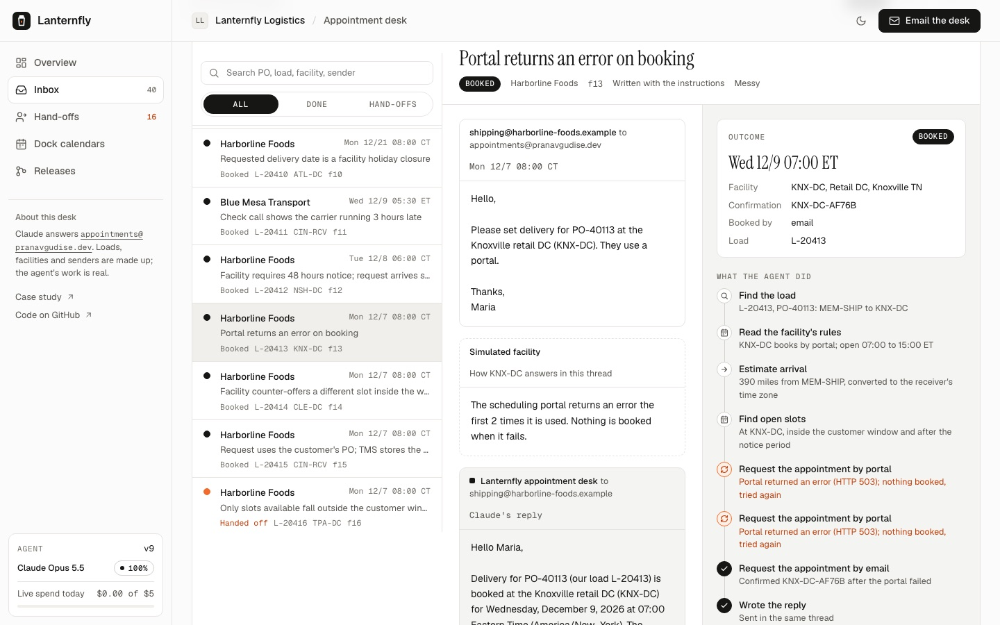

Go-live gate
Why build this
Booking a dock appointment is a small job a freight brokerage does many times a day, and most of it is checking. Each email has to be tied to the right load, the truck's arrival worked out in the dock's own time zone, the facility's hours, holidays and notice rules respected, and the request sent through whichever channel that dock uses. A wrong booking costs more than a slow one: the truck arrives for a slot that was never confirmed.
I wanted to see how much of that desk an agent can run on its own, and to make it prove that before it gets any traffic.
The rules live in the tools.
The agent cannot book its way past a rule. A facility refuses the wrong channel, a closed or taken slot, and anything inside its notice period, so a bad request fails loudly instead of landing on the calendar.
A wrong appointment is worse than a hand-off.
The gate treats writing a wrong appointment, or missing a thread it should have handed off, as critical. One critical failure on any run blocks go-live.
Know what isn't the desk's job.
Hazmat, address changes, rate questions, complaints and dates outside the customer window go to a coordinator or the account executive, with a note saying what the agent already found.
Every version earns its traffic.
A new version starts with none. It gets 10% after passing threads it was never tuned on, 50% after the full gate, then 100%. A failed stage puts the previous version back.
- Built
- November 2026, solo: design, build, evals and rollout
- Runs on
- Claude Opus 5.5, Cloudflare Workers, D1, Email Routing
- Graded with
- golive-gate, six checks per thread, three runs each
The desk console
What an appointments team would keep open: every thread with Claude's reply and each step it took, the hand-off queue with the agent's notes, dock calendars, live spend against the $5 daily cap, and the release history. Recorded threads show all three graded runs; threads you send go to the live agent.

Staged rollout
Every push to main uploads a new version with no traffic. It gets 10% of traffic and must pass the held-out gate, then 50% and the 25-thread gate, then 100%. The gates run pinned to the new version. A failed stage puts the previous version back.
Loading the latest release.
How it works
- Find the load. Match the PO together with the facility, because one customer PO can belong to several loads. Facts split across emails are merged.
- Decide if it is the agent's job. Hazmat, address changes, complaints, rate questions and dates outside the customer window go to a coordinator or the account executive, with a note.
- Find the earliest feasible slot. The carrier's ETA, or the pickup plus transit at 50 mph and an hour at the dock, converted to the facility's time zone; inside the customer window; after the facility's notice period; around holidays and slots already taken.
- Book through the facility's channel. Email, portal or phone. A failed portal is retried once, then the request goes by email. Counter-offers, questions and "PO not found" are handled or handed off.
- Tell people. The carrier on the load, and the account executive when a holiday or notice rule moved the date or the load was rescheduled. Then the reply email.
The facilities are simulated. A facility refuses the wrong channel, a closed or taken slot, and anything inside its notice period, the way a real dock scheduler would, so the agent cannot book its way past a rule.
Limits
- The 25 threads were written together with the agent's instructions, so a perfect score there shows the agent follows the rules it was given. The 15 held-out threads were written after the instructions were frozen, and the instructions were not changed for them. They are still written by the same person, so real inbox email is the harder test.
- The facilities, loads and their answers are simulated; there is no real TMS or dock scheduler behind it.
- Loads are set in December 2026, and visitors share one copy of the data, so a slot another visitor booked stays taken.